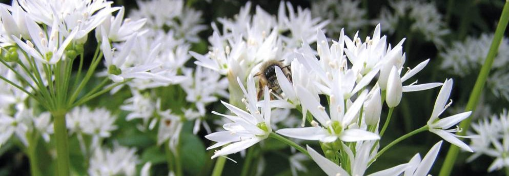
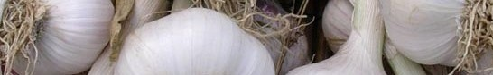

Aglio
caratteristiche e utilizzi
Cura dell'Aglio
I bulbilli si mettono a dimora in autunno, tra ottobre e novembre, oppure in inverno, da gennaio a marzo, prendendo lo spicchio fra le tre dita e infiggendolo in terra fino alla punta. Se il terreno è pesante un terzo dello spicchio deve rimanere visibile fuori terra. Si piantano 25-30 bulbilli per metro quadrato mantenendo tra essi una distanza minima di 10 cm. Le produzioni migliori si ottengono piantando i bulbilli più grossi, cioè quelli che si trovano all’esterno della testa.Il controllo manuale e/o meccanico delle erbe spontanee è molto importante, perché l’aglio è poco competitivo verso le altre piante.Di solito non deve essere irrigato, ma eventuali innaffiature devono essere sospese almeno 20-30 giorni prima della raccolta, per non pregiudicare la conservabilità dei bulbi.
Utilizzi dell'Aglio
I bulbi si usano fin dall’antichità come condimento per i cibi: insalate, sughi, stufati, pesce, verdure, insaccati, ecc. Possono essere impiegati anche per preparare infusi o decotti contro i dolori reumatici, i vermi intestinali, la febbre, la pressione alta ed i catarri bronchiali.In alcune zone di Italia si consuma anche l’aglio fresco in insalata raccogliendolo prima che inizino a formarsi le tuniche intorno ai bulbi.L’aglio non è indicato per chi soffre di pressione bassa e per chi ha problemi di digestione o è malato di fegato.Il decotto di aglio può essere usato come repellente verso molti insetti, ad esempio afidi e zanzare.
Paragrafo 3
L'Aglio in Cucina
Le foglie, molto profumate, possono essere, in piccole quantità aggiunte nelle insalate miste primaverili o usate per farne un pesto, seguendo la ricetta originale e sostituendo le foglie più piccole dell'aglio orsino a quelle di basilico. Le foglie raccolte in primavera possono anche essere sminuzzate e congelate in sacchetti chiusi. Le foglie giovani vengono utilizzate per dare sapore ai piatti di pesce, insalate, formaggi teneri e patate lessate. Il bulbo può essere utilizzato, una volta tritato, per condire sughi, pasta, zuppe, patate in verde, minestroni, frittate, pesce e cous cous, conferendo un sapore particolare.
L'Aglio in Erbolisteria
L'aglio, oltre ad essere ampiamente utilizzato in culinaria, è dotato anche di interessanti proprietà terapeutiche. Più nel dettaglio, a questa pianta vengono ascritte attività immunostimolanti, antipertensive, antiaggreganti piastriniche, ipocolesterolemizzanti e ipoglicemizzanti.Per uso esterno, l'aglio esibisce proprietà antisettiche e rubefacenti, che lo rendono utile contro foruncoli, manifestazioni acneiche ed antrace.
- Nome scientifico: Allium sativum.
- Famiglia: Liliaceae.
- Terreno ideale: Preferibilmente leggero e drenante ma si adatta bene anche a terreni poveri.
- pH ideale: Leggermente acido compreso, tra 6 – 7.
- Preparazione del terreno: Vangatura o aratura a 15 – 20 cm.
- Concimazione: Non particolarmente esigente, ama terreni ricchi di zolfo.
- Quando seminare: Novembre – gennaio – febbraio direttamente in pieno campo.
